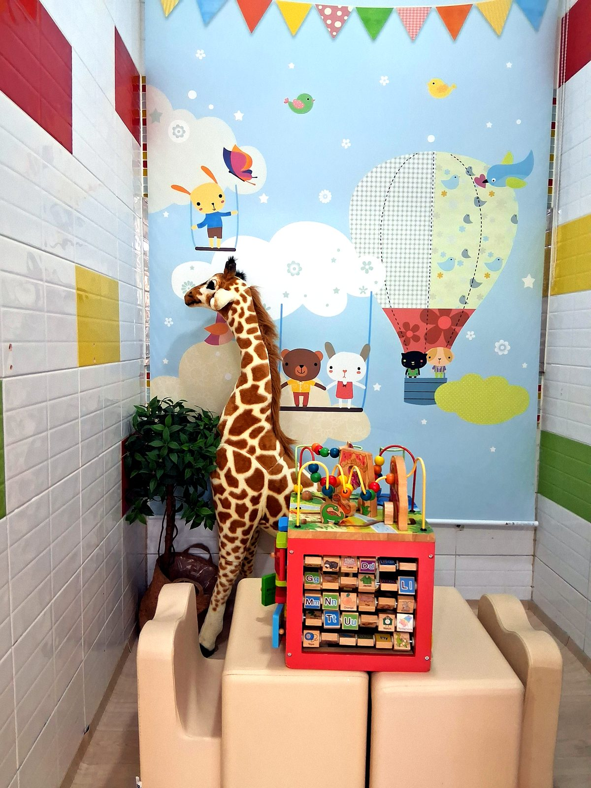
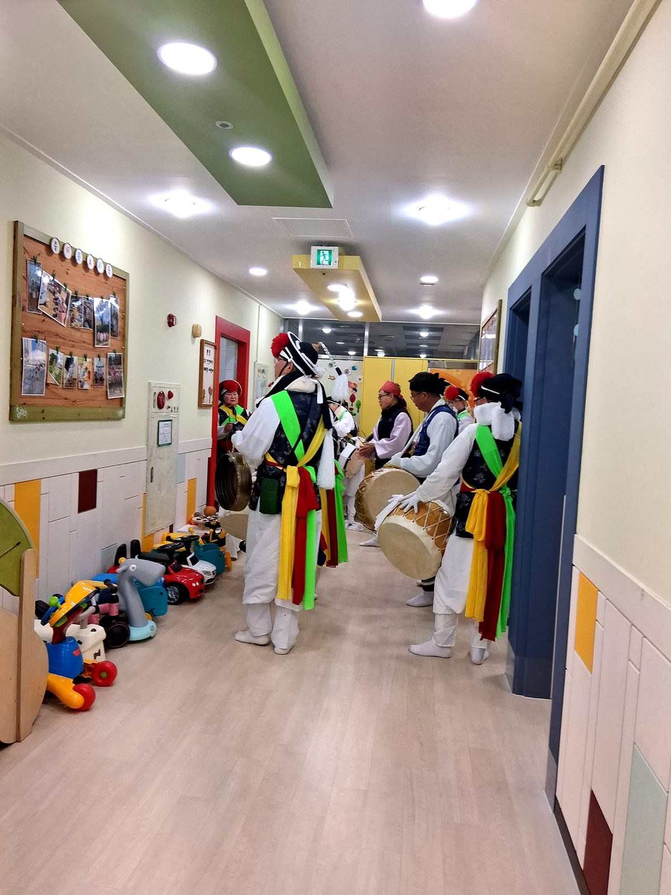

BRAIN PLAY
만지고 느끼는 경험이
만지고 느끼는 경험이
아이의 두뇌를 깨웁니다
영아기는 손으로 만지고 입으로 탐색하며 세상을 알아가는 시기입니다. 아이가 직접 교구를 잡고, 비교하고, 옮기고, 반복하는 과정에서 집중력과 손 조작 능력, 사고력이 자랍니다.
이현웰가어린이집은 아이의 발달 단계에 맞춘 교구 활동을 통해 억지 학습이 아닌 놀이 속 배움을 경험하게 합니다.
- 🧩감각 교구
- 🤲소근육 발달
- 👀집중력 향상
- 🔁반복 탐색

OUTDOOR
신발만 신고 나서면
신발만 신고 나서면
자연이 아이의 교실이 됩니다
이현웰가어린이집은 이현하이클래스웰가 아파트 단지 안 관리동에 있어, 푸른 자연환경이 잘 가꾸어진 단지 전체가 아이들의 배움터가 됩니다.
벚꽃나무, 수국, 야생화가 피고 작은 생명들을 만날 수 있어 자연관찰과 숲체험이 일상 속에서 이루어집니다.
- 🌸벚꽃·수국·야생화 관찰
- 🦋나비·메뚜기·개미 만나기
- 🌳단지 안 숲체험
- 🍂계절 산책
- 🚦교통안전 교육
- 👐오감 체험놀이
SEASONAL PLAY
계절마다 달라지는
계절마다 달라지는
오감 체험놀이
과일, 자연물, 물, 빛, 소리처럼 아이가 직접 느낄 수 있는 재료로 계절 활동을 구성합니다.
01
보고 만져요
색, 모양, 질감, 온도를 손끝으로 탐색합니다.
02
듣고 움직여요
소리와 움직임에 반응하며 대근육 활동으로 확장합니다.
03
함께 나눠요
친구와 차례를 기다리고 함께 참여하는 경험을 쌓습니다.